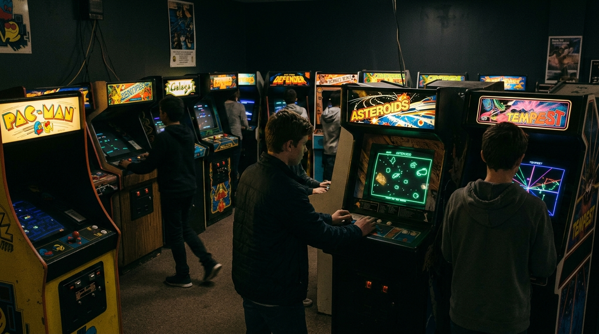

04.A • Sentuhan Simpel
Modal Usap Layar Kaca
Nggak perlu hapal tombol stik yang ribet. Cukup geser jempol buat narik ketapel di Angry Birds atau iris buah di Fruit Ninja. Emak-emak sampai kakek-nenek pun ikutan main.
Nostalgia bareng melihat gimana video game yang dulunya cuma mesin kayu di pojokan mall bisa berubah jadi hiburan nomor satu di dunia dan ngubah cara kita nongkrong sama temen.

Sebelum ada HP atau konsol di kamar sendiri, main game itu butuh modal fisik dan mental. Kita harus jalan ke mall atau dingdong deket rumah, tukar recehan, terus main sambil diliatin puluhan orang asing di belakang punggung. Kalah dikit langsung ganti giliran!
Dulu ada hukum rimba tak tertulis: kalau ada yang lagi asyik main dan kamu mau nantang, cukup taruh koin 100 perak atau koin token kamu di pojok bawah kaca mesin. Itu artinya: "Gue antre berikutnya, bro!". Begitu yang main mati, saatnya kamu unjuk gigi.


Hadirnya Nintendo (NES/Famicom), Sega, dan PlayStation bikin game resmi pindah ke rumah. Yang awalnya TV tabung cuma dipake bapak nonton berita TVRI atau sinetron, sekarang harus berbagi waktu sama stik game berkabel panjang yang berserakan di karpet.
Kalau game macet atau layarnya garis-garis, solusinya cuma satu: cabut kasetnya, tiup kenceng-kenceng celah kuningannya, lalu tancap lagi. Padahal kata pabrik meniup itu bikin kuningan karatan karena uap ludah, tapi ajaibnya cara ini selalu berhasil di mata kita!
Tahun 2000-an jadi saksi ledakan warnet di setiap gang kampus dan sekolahan. Ruangan dingin ber-AC, bau rokok campur asap mi instan, dan suara teriakan "BOM PLANTED!" atau bunyi orang nge-chat di Ragnarok jadi kenangan tak terlupakan bagi generasi 90-an dan 2000-an.
Mulai jam 10 malam sampai jam 6 pagi, tarif warnet biasanya jadi super murah (misal 10 ribu rupiah semalaman). Di sanalah klan Counter-Strike tanding lawan warnet sebelah, begadang bareng guild Ragnarok, atau hunting bareng di RF Online. Temen mabar yang awalnya gak kenal nama asli malah jadi sahabat akrab di dunia nyata.

"Dulu kita nggak perlu tahu muka temen satu tim kita siapa; cukup tahu nickname-nya, kita bisa kompak jaga lorong bareng sampai subuh."
Begitu layar sentuh smartphone hadir, main game nggak lagi butuh waktu khusus berjam-jam. Game nyempil di sela-sela aktivitas sehari-hari: waktu nunggu pesanan makanan, di gerbong KRL yang padat, atau pas istirahat kuliah.
Nggak perlu hapal tombol stik yang ribet. Cukup geser jempol buat narik ketapel di Angry Birds atau iris buah di Fruit Ninja. Emak-emak sampai kakek-nenek pun ikutan main.
Dari Game Boy zaman dulu sampai Nintendo Switch sekarang, konsol saku selalu setia nemenin mahasiswa nunggu kelas berikutnya di kampus atau pas santai di kos.

Main satu babak Mobile Legends atau nyelesaiin puzzle Candy Crush sambil nunggu kereta datang, ngisi jeda waktu kosong yang dulunya cuma bengong.
Dari grafis kotak-kotak piksel di layar tabung cembung, sekarang kita udah bisa masuk ke dunia game pake kacamata VR dan main game kualitas konsol di PC genggam kayak Steam Deck. Penasaran gimana lompatan teknologi dari tahun 2020 sampai 2026? Yuk kepoin garis waktu lengkapnya!